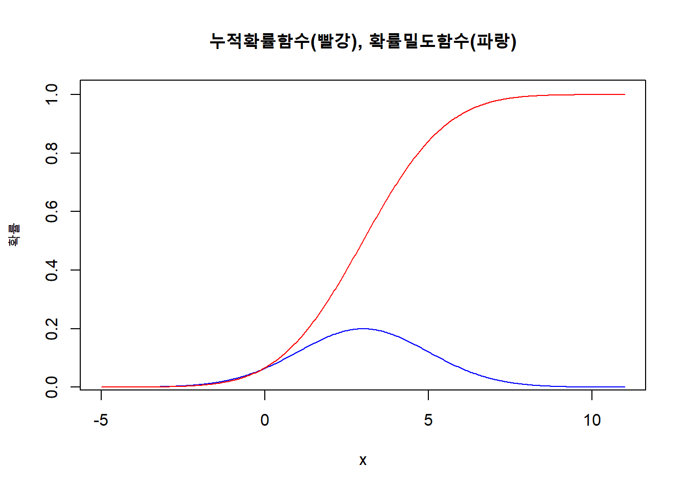
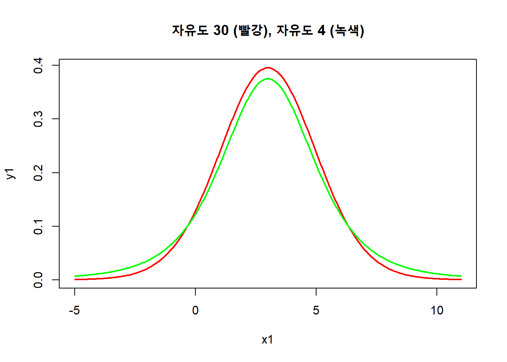
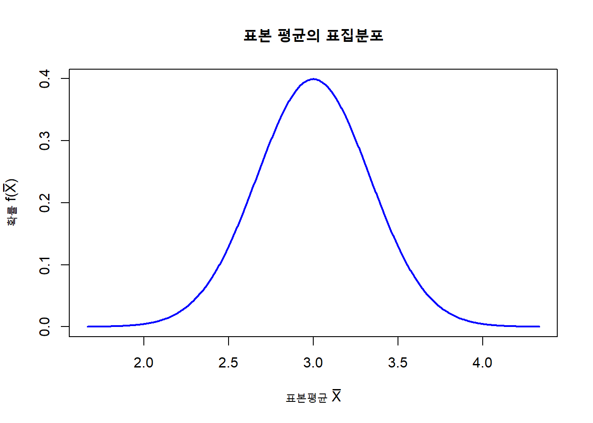
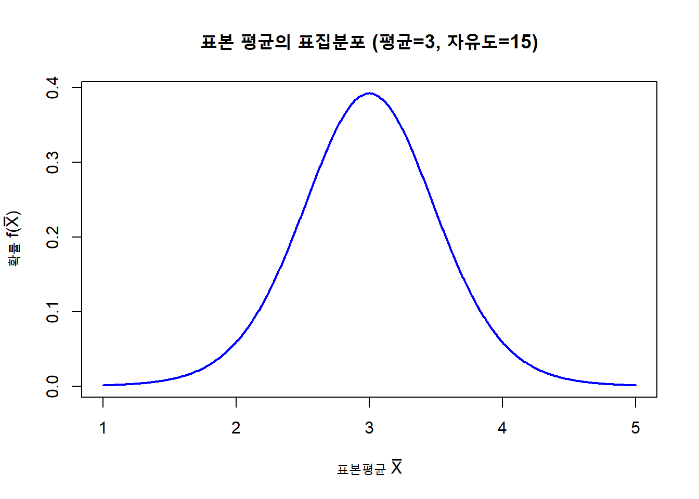
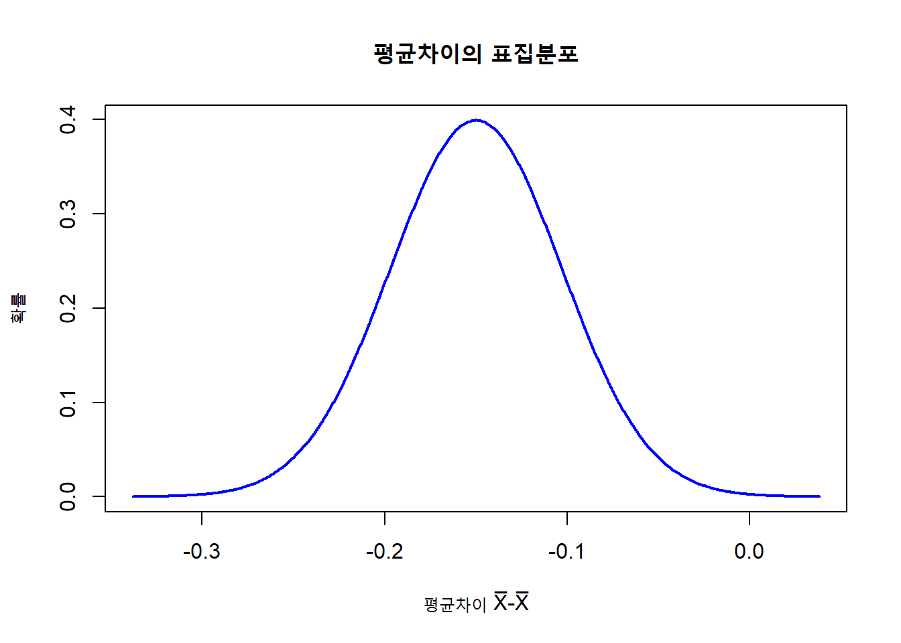
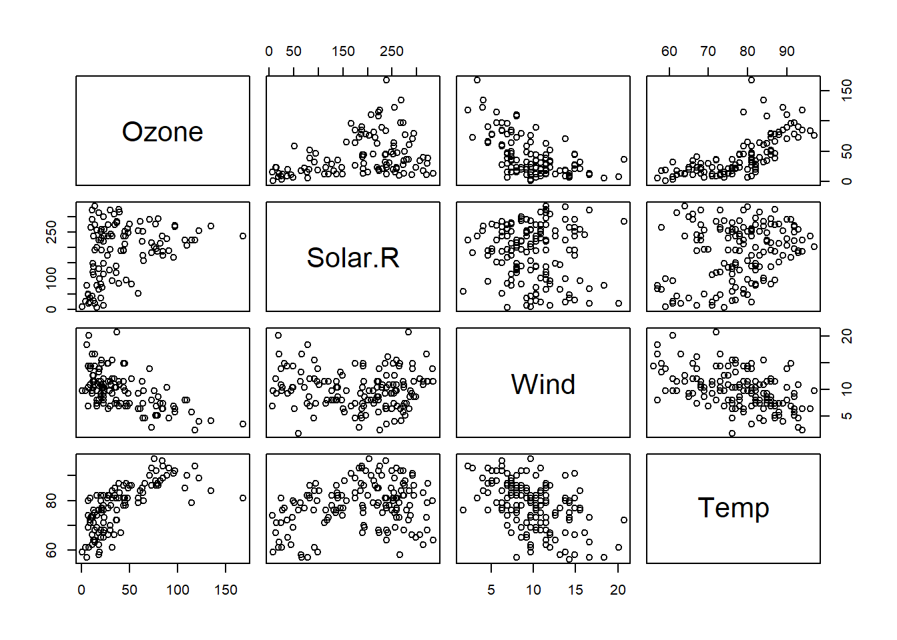

n<-12
x<-7
p<-0.5
ans1 <- dbinom(7,12,0.5) #함수 이용
ans2 <- choose(n,x)*p^x*(1-p)^(n-x) #공식 이용13 해답
Tip
문제 풀이는 qmd 파일을 만들어 풀고 워드 파일로 출력
답안을 작성하고 출력해 볼 때 html 이나 워드 등의 형태로 가능합니다. 과제 제출은 워드 형식이니까 그걸로 연습해보는게 좋습니다. 워드 형식으로 출력하려면 qmd 파일의 맨 위 YAML 메타데이터 부분에 아래처럼 format: docx를 넣습니다.
Note
코드청크 옵션은 글로벌 옵션으로 error: true
또 코드청크가 여러 개일 때 한 곳이라도 에러가 나면 문서 전체가 출력이 되지 않습니다. 따라서 코드청크에서 에러가 나도 출력하라는 전체(글로벌) 코드청크 옵션을 역시 맨 위에 넣어줍니다. 그래서 YAML 부분에 아래와 같이 error: true 옵션을 넣습니다.
---
title: "통계와분석 과제"
author: "내 이름"
format: docx
execute:
error: true
---
Tip
코드청크를 넣을 때 단축키 Ctrl+Shift+i 를 사용하면 편합니다.
8 장
해답 Exercise 8.1
{1, 2, 3, 4, 5, 6}
{1, 2}
\(f(x)=\frac{1}{6}x\)
예) 만일 \(x가\) 3이면 1, 2, 3 이 나올 때 3보다 적거나 같다. 따라서 \(\frac{1}{6}*3=\frac{1}{2}\)이 답이 된다.
해답 Exercise 8.2
- 답
확률은 0.1933594
확률은 0.1933594
확률은 `r ans1` # 둘 중 하나를 사용하면 됩니다.
확률은 `r ans2`- 답
## μ = 6
## σ = 1.732051# 그리스 문자를 넣은 방법
cat("\u03BC = ", 3) # mu를 나타내는 유니코드
cat("\u03C3 = ", x) # sigma를 나타내는 유니코드
# {r collapse=TRUE} 옵션을 넣으면 두 줄이 붙어서 나온다.\(\mu\)=6, \(\sigma\)= 1.7320508
해답 Exercise 8.3
x <-seq(-5, 11, length = 500) # x의 최소값 최대값을 평균에서 각각 표준오차의 4배 먼 곳으로 잡는다.
y_p <- pnorm(x, mean = 3, sd = 2) # 누적확률함수
y_d <- dnorm(x, mean = 3, sd = 2) # 확률밀도함수
plot(x, y_d, type = "l", col = "blue", xlab = "x", ylab= "확률", ylim = c(0.03, 1.01), main = "누적확률함수(빨강), 확률밀도함수(파랑)")
lines(x, y_p, type = "l", col = "red")
해답 Exercise 8.4
m=3
sd=2
df1=30
df2=4
t <-seq(-4, 4, length = 500) # t값의 최소값 최대값을 평균에서 각각 표준오차의 4배 먼 곳으로 잡는다.
y1 <- dt(t, df =30) # t값에 해당하는 확률인 y1을 구한다
x1 <- t * sd + m # t값을 원래 관찰값인 x1값으로 바꾼다.
y2 <- dt(t, df =4) # t값에 해당하는 확률인 y2을 구한다
x2 <- t * sd + m # t값을 원래 관찰값인 x2값으로 바꾼다.
plot(x1, y1, type = "l", col = "red", lwd = 2.0, main = "자유도 30 (빨강), 자유도 4 (녹색)")
lines(x2, y2, type = "l", lwd = 2.0, col = "green")
해답 Exercise 8.5
# 정규분포
표본평균_평균 <- 3
표준오차 <- 2/sqrt(36)
# 표준정규분포의 z값과 y값을 구한다.
z <-seq(-4, 4, length = 500)
f <- dnorm(z, mean = 0, sd = 1)
x <- z * 표준오차 + 표본평균_평균 # t값을 원래 관찰값인 x1값으로 바꾼다.
# X\u0305 는 bar를 넣는 유니코드
plot(x, f, type = "l", col = "blue", lwd = 2.0, xlab = "표본평균 X\u0305", ylab = "확률 f(X\u0305)", main = "표본 평균의 표집분포") 
해답 Exercise 8.6
# t 분포
n <- 16 #표본 크기
표본평균 <- 3 #표본 평균
표본표준편차 <- 2 #표본 표준편차
자유도 <- n-1 #자유도
표본평균_평균 <- 표본평균
표준오차 <- 2/sqrt(n) # 표본평균의 표준편차
#t값과 그에 해당하는 확률을 구한다
t <-seq(-4, 4, length = 500)
f <- dt(t, 자유도)
x <- t * 표준오차 + 표본평균_평균 # t값에 해당하는 관찰값 x를 구한다
# X\u0305 는 bar를 넣는 유니코드
plot(x, f, type = "l", col = "blue", lwd = 2.0, xlab = "표본평균 X\u0305", ylab = "확률 f(X\u0305)", main = "표본 평균의 표집분포 (평균=3, 자유도=15)") 
해답 Exercise 8.7
# 정규분포
평균차이_평균 <- -0.15
표준오차 <- 0.047
# 확률을 구한다
z <-seq(-4, 4, length = 500)
f <- dnorm(z, mean = 0, sd = 1)
x <- z * 표준오차 + 평균차이_평균 # t값을 원래 관찰값인 x1값으로 바꾼다.
# X\u0305 는 bar를 넣는 유니코드
plot(x, f, type = "l", col = "blue", lwd = 2.0, xlab = "평균차이 X\u0305-X\u0305", ylab = "확률", main = "평균차이의 표집분포") 
12 장
해답 Exercise 12.1
pairs(airquality[1:4])
cor_matrix <- cor(airquality[, 1:4], use= "pairwise")
round(cor_matrix, digits = 2)
lm <- lm(Ozone ~ Solar.R + Wind + Temp, data = airquality)
summary(lm) Ozone Solar.R Wind Temp
Ozone 1.00 0.35 -0.60 0.70
Solar.R 0.35 1.00 -0.06 0.28
Wind -0.60 -0.06 1.00 -0.46
Temp 0.70 0.28 -0.46 1.00
Call:
lm(formula = Ozone ~ Solar.R + Wind + Temp, data = airquality)
Residuals:
Min 1Q Median 3Q Max
-40.485 -14.219 -3.551 10.097 95.619
Coefficients:
Estimate Std. Error t value Pr(>|t|)
(Intercept) -64.34208 23.05472 -2.791 0.00623 **
Solar.R 0.05982 0.02319 2.580 0.01124 *
Wind -3.33359 0.65441 -5.094 1.52e-06 ***
Temp 1.65209 0.25353 6.516 2.42e-09 ***
---
Signif. codes: 0 '***' 0.001 '**' 0.01 '*' 0.05 '.' 0.1 ' ' 1
Residual standard error: 21.18 on 107 degrees of freedom
(42 observations deleted due to missingness)
Multiple R-squared: 0.6059, Adjusted R-squared: 0.5948
F-statistic: 54.83 on 3 and 107 DF, p-value: < 2.2e-16
Tip
위 청크 옵션에 results: hold를 넣었기 때문에 텍스트로 된 결과가 뭉쳐서 나왔습니다.
위의 플롯과 상관계수, 회귀분석 결과를 보고 아래의 것들을 구하거나 설명할 수 있어야 합니다.
- 회귀식
- 분산분석표
- 회귀 모델의 유의미 여부
- 회귀 모델의 결정계수 또는 설명력
- 추정의 표준오차
- 회귀계수의 표준오차와 신뢰구간
- 회귀분석의 독립변인과 종속변인과의 가설 검정
- 리스트 형식의 결과 변수에서 요소를 추출